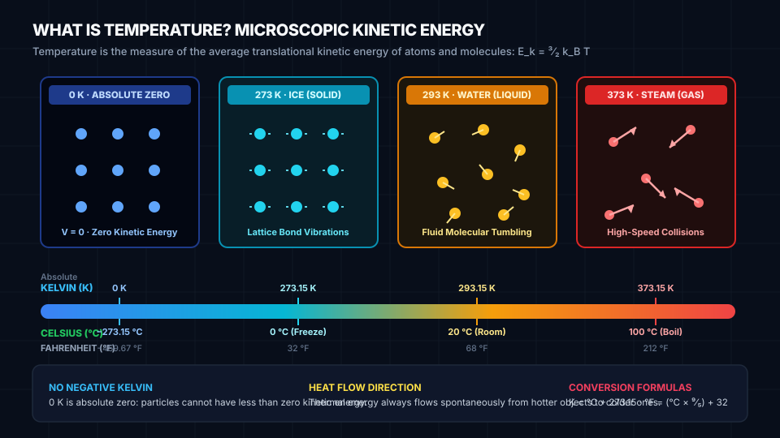

Foundational STEAM lesson for Hot & Cold.
At the microscopic scale, temperature is not a fluid or a separate substance—it is the average kinetic energy of jiggling atoms. At absolute zero (\(0\text{ K}\)), particles possess minimal quantum motion; as thermal energy is added, particles vibrate faster and collide with higher momentum.
